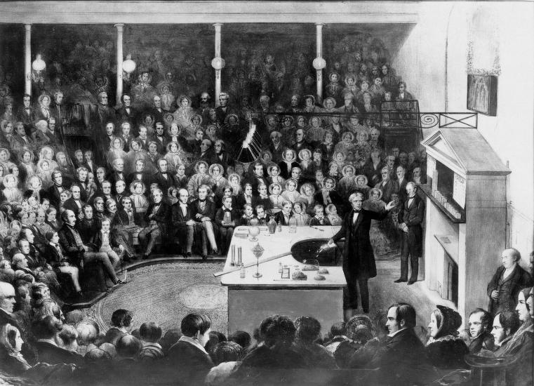

Michael Faraday
Michael Faraday was an English scientist who contributed to the study of electromagnetism and electrochemistry. His main discoveries include the principles underlying electromagnetic induction, diamagnetism and electrolysis.
Electricity and magnetism
Near the end of his career, Faraday proposed that electromagnetic forces extended into the empty space around the conductor. This idea was rejected by his fellow scientists, and Faraday did not live to see the eventual acceptance of his proposition by the scientific community.
public service
Between 1827 and 1860 at the Royal Institution in London, Faraday gave a series of nineteen Christmas lectures for young people, a series which continues today. The objective of Faraday's Christmas lectures was to present science to the general public in the hopes of inspiring them and generating revenue for the Royal Institution.
His lectures were joyful and juvenile, he delighted in filling soap bubbles with various gasses (in order to determine whether or not they are magnetic) in front of his audiences and marveled at the rich colors of polarized lights, but the lectures were also deeply philosophical. In his lectures he urged his audiences to consider the mechanics of his experiments: "you know very well that ice floats upon water ... Why does the ice float? Think of that, and philosophise". His subjects consisted of Chemistry and Electricity, and included: 1841 The Rudiments of Chemistry, 1843 First Principles of Electricity, 1848 The Chemical History of a Candle, 1851 Attractive Forces, 1853 Voltaic Electricity, 1854 The Chemistry of Combustion, 1855 The Distinctive Properties of the Common Metals, 1857 Static Electricity, 1858 The Metallic Properties, 1859 The Various Forces of Matter and their Relations to Each Other.